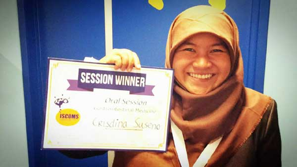

Cris, Mahasiswa Padang Berprestasi di Belanda
Warga LDII memiliki generasi penerus yang bertalenta. Salah satunya yaitu Crisdina Suseno, mahasiswa Fakultas Kedokteran Universitas Andalas. Cris, sapaan akrabnya memang masih belia, namun prestasinya membuat warga LDII di Sumatera Barat berbangga.
Anak pertama dari pasangan Suseno Nugroho dan Elfa Yanti terpilih mengikuti The International Student Congress of (bio) Medical Sciences (ISCOMS) pada Juni lalu, di Belanda. Keikutsertaannya setelah berkompetisi dengan 600 generasi muda dari seluruh dunia. Bahkan gadis kelahiran 10 Juli 1995 ini berhasil meraih presentasi terbaik dalam kategori gastrointestinal medicine.
ISCOMS adalah salah satu kongres mahasiswa bidang biomedis yang diikuti oleh mahasiswa kedokteran, kedokteran gigi, farmasi dan biologi tingkat internasional yang diadakan oleh University Medical Center of Groningen, Belanda. Kongres yang rutin diadakan sejak 23 tahun lalu ini bertujuan mempromosikan penelitian mahasiswa serta memperluas jaringan ilmiah pesertanya.
ISCOMS memberikan kesempatan bagi peneliti muda dari seluruh dunia untuk mengirimkan hasil penelitian mereka. Pada perhelatan 2016, terdapat 600 orang yang lulus seleksi abstrak, yang diundang ke Belanda untuk mempresentasikan hasil penelitiannya. Karya mereka disajikan dalam bentuk poster maupun presentasi oral di depan audiens internasional dan profesional.
Cris mengirimkan penelitiannya yang berjudul “Pengaruh Pemberian Probiotik Es krim Dadiah Terhadap Peningkatan Sekretori Imunoglobulin A Mukosa Usus dan Perannya Sebagai Mekanisme Protektif Bakteri Salmonella Typhimurium”. Penelitian dilakukan selama tiga bulan terhadap 24 tikus percobaan. Hasil dari penelitian tersebut adalah es krim dadiah mampu melindungi usus dari infeksi Thypimurium salmonella melalui efek probiotiknya, dengan cara meningkatkan sekresi sIgA pada mukosa usus.
Cris memang sangat tertarik di bidang penelitian. Tak heran bila ia meraih banyak penghargaan atas usaha kerasnya. Unit Kegiatan Mahasiswa yang diikutinya juga masih berbau penelitian seperti Medicalstudent Research Centre (MRC), dan dia juga aktif dalam UKM Jurnalistik BROCA. Melalui bidang yang disukainya, dia ingin berkonstribusi untuk bangsa.
“Apapun yang kita lakukan, maka lakukanlah yang terbaik, maka Allah pun akan memberikan yang terbaik” tutup gadis yang aktif mengikuti pengajian di LDII Kota Padang ini. (Verdira Asihka)

Prestasi Crisdina Suseno
2016
· Presentasi oral terbaik kategori “Gastrointestinal Medicine” pada ISCOMS di University of Groningen, Belanda.
. Publikasi abstrak dalam Book of Abstract ISCOMS 2016 University of Groningen, Belanda.
· Finalis Research Paper Congress pada Temu Ilmiah Nasional (Temilnas) 2016 di Malang.
· Abstrak diterima pada International Student Congress Kosice 2016 di Slovakia.
· Abstrak diterima pada International Congress of Medical Sciences for students and young doctors 2016, Sofia, Bulgaria.
· Publikasi review artikel di Andalas Medical Megazine berjudul “Early Diagnosis of HIV Type 1 with Double Detect Protein”.\
2015
· Juara ketiga "Poster Ilmiah SRF FK USU 2015" di Medan.
· Penerima dana penelitian dari "PKM-DIKTI".
· Top 10 nasional presentasi oral review literatur medis di Universitas Sumatera Utara, Universitas Diponegoro, dan Universitas Andalas.
2014
. Top 10 nasional presentasi oral review literatur medis di Universitas Muhammadiyah Yogjakarta.
2013
· Skor tertinggi dalam Ujian Nasional tingkat SMA se Sumatera Barat.
· Runner Up pada Olimpiade Sains Nasional bidang biologi.
· Top 10 Nasional Gajah Mada Medical Fair tingkat SMA di Universitas Gajah Mada, Yogyakarta.